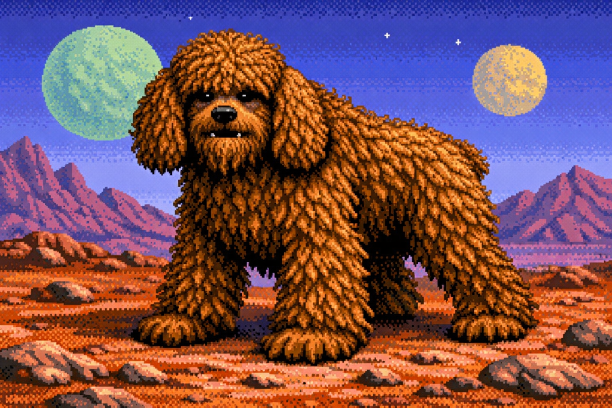
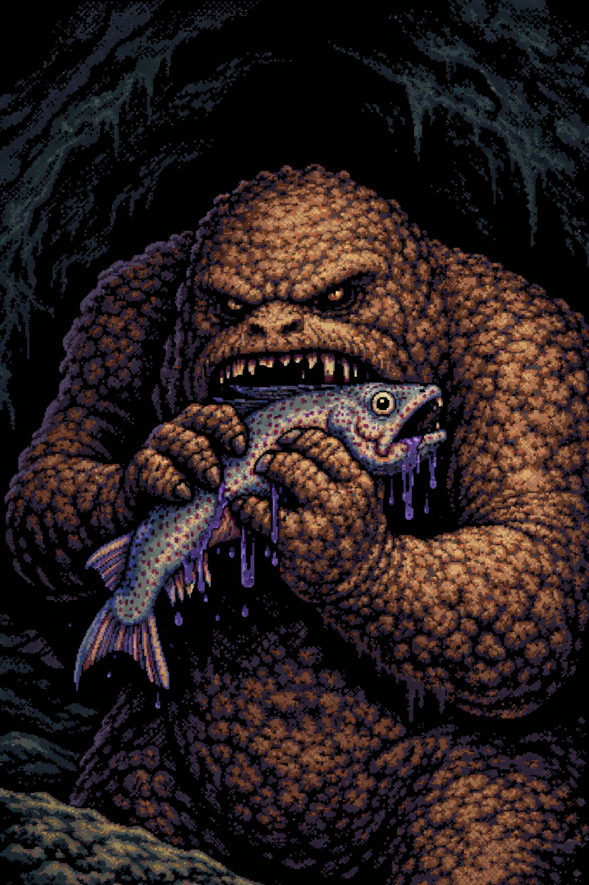
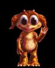
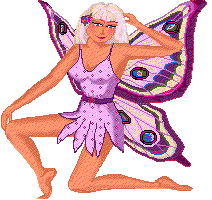
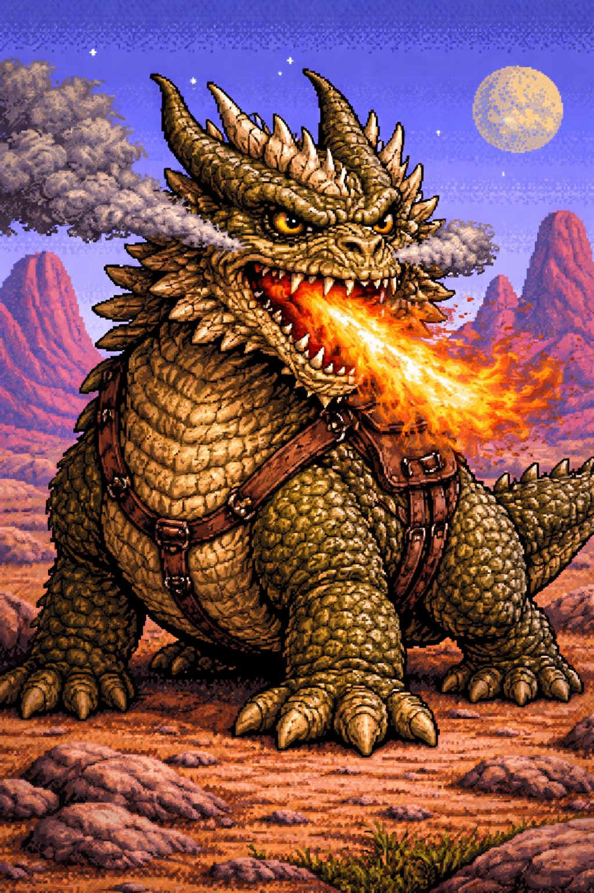
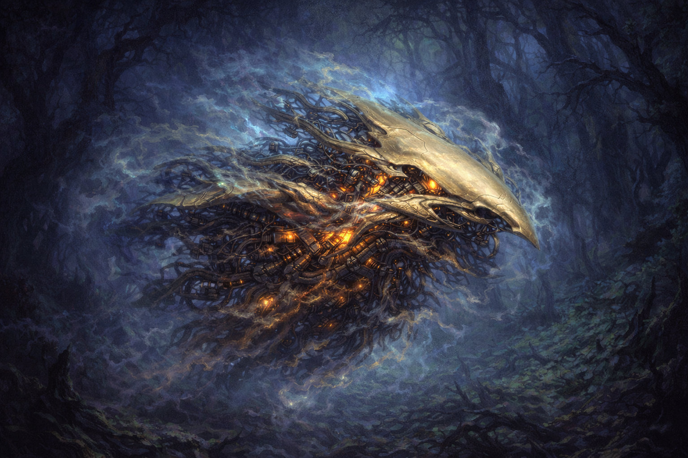
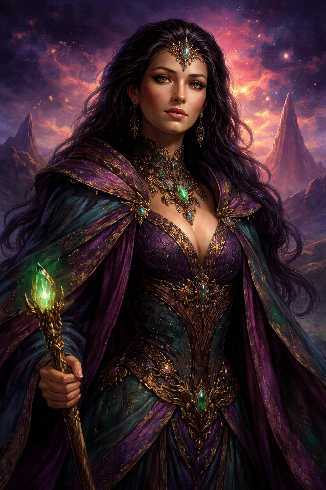

This depiction was approximated using primitive Earth-based imaging technology
THIS IS THE WOOKIE POODLE!!!!
- The Wookie Poodle is a descendant of well.....I think we
all know the answer to that question!!Although this Wookie Poodle does not look like the
Wookie you saw in Star Wars, he is in fact very much like him! This Poodle can climb trees
and even scale a 90 degree wall!!!He is called "Wookie Poodle" because he has
many characteristics of a dog,yeah thats right you heard me correctly! His mating call is
a barking sound which is very similar to that of an Earthling dog.He also walks on all
fours (most of the time),unless he is very frightened or if he is hunting for food.Watch
out for this mutt if you have a Creampop in you're hand,he is very fond of the site of
one, and if you dont figure out an escape route and get outta his way, this creature will
be very aggressive. He's like that when he's seen something he takes an interest in!The
Wookie Poodle is also known for performing Ashashuain Ranstanst to the Constants!!!!!!
(no-one really knows for sure however)

This depiction was approximated using primitive Earth-based imaging technology
A Reemer!!
- This creature is very personal. He lives a private life
only living for himself and would rather just be left alone! As you can see in this
picture he loves to eat "Aschnuk" an animal race that people on earth
would compare to as fish. The reemer lives in caves near the outskirts of Ashashua, he
likes dark places for reasons unknown, he only comes out when he is hungry. This Species
will eat ANYTHING!!! (if, of course he can over power his prey.) So Watch out if you have
small children around, because............well.......you never know!

The Crontosh
- Youre looking at a more adorable, and familiar
looking" creature" from Ashashua. He's kinda like a cute fuzzy ummm Teddy
Bear??? Anyhow this animal is the common household pet on Ashashua. He's very clean and
rarely goes to the Facility (if you know what I mean), because he only eats at certain
times of the year. BUT!!! Just wait until this fuzzy little creature grows up!! This
Creature is a baby version of the Reemer, yeah thats right! When this little guy grows up
he'll be a grumpy ol monster like animal. This Creature must be taken to the caves on the
outskirts of Ashashua at the age of 3, so if I were you I would not plan on adopting one
of these! If you do you just might get attached....We wouldn't want that!

Koncatreen
- These creatures should all be shot!!! Just like Billy the
kid and his shotgun shells!!!(on Prozac, swingin through the double doors!) YEAH YEAH!!
This is a pesky little thing. They like to nibble on you're Creampops, and fly around you
squealing for attention!!! That's bad, very bad!!

This depiction was approximated using primitive Earth-based imaging technology |
Rufflecrumbs
Rufflecrumbs used to be THE source of
transportation on Ashashua, but the people on Ashashua got tired of seeing their fellow
neighbors being singed to death just by a simple act of a Rufflecrumb breathing on them.
Many people feared their lives were at stake for that reason. Rufflecrumbs are also very
hard to tame, and if I were you, I wouldn't try! Gloomwing has a pet Rufflecrumb, Good
luck Gloomwing!! I hope he doesn't breath on you!
|

This depiction was approximated using primitive Earth-based imaging technology
The Bydo-X
- Nobody on Ashashua can agree on what exactly a Bydo-X is, and frankly, the ones who claim to know best are probably the least trustworthy people you could ask. What is agreed upon is this: one day they weren't here, and then they were. Scholars believe they arrived through a dimensional portal, though this theory is complicated by the fact that the Bydo-X does not appear to be from anywhere in particular. It shifts. It transforms. It phases between shapes that your brain struggles to file away as a memory. You will see one, look away, and find yourself unable to describe what you just saw. This is not a coincidence.
- The Bydo-X is not exactly a creature, and it is not exactly a machine. It is not exactly anything. It has been observed as a sleek pale gold projectile, a sprawling mechanical lattice, and something else entirely — sometimes within the same encounter. The only consistent quality is that it is always watching, even when it appears to have no eyes.
- They tend to operate near the forests outside Corrath, which is unfortunate for everyone. They are repelled by river rock, which nobody predicted, and which the Bydo-X itself seems genuinely annoyed about. Attempts to study them have failed because they do not hold still long enough to be studied, and also because the researchers keep disappearing.
- Gloomwing has no comment at this time.

This depiction was approximated using primitive Earth-based imaging technology
Velshara
- Velshara is one of those people that you immediately suspect has already figured you out before you have opened your mouth. She probably has. Born and raised in Corrath, she has spent most of her life navigating the chaotic commerce and general absurdity of the city with a composure that frankly makes everyone around her slightly nervous. Nobody is entirely sure what her official title is, and she has never volunteered the information. The working assumption is that it is something important.
- She was first encountered by a portal visitor on the forest road outside Corrath under circumstances that neither party has fully explained. What is known is that the encounter involved a Bydo-X, a handful of river rocks, and a waterfall. Velshara has described the experience as "fine." The portal visitor has been somewhat less concise about it.
- She is not warm, exactly, but she is fair. She will extend her hand to a stranger in the middle of a smog-shrouded forest without flinching, which on Ashashua is considered either an act of great courage or great confidence, depending on who you ask. On Ashashua these are generally the same thing.
- Her relationship with Corrath is complicated. She loves it the way you love something that constantly disappoints you but remains, stubbornly, the most interesting thing around. She has been offered a Creampop by no fewer than four people of great authority, which tells you everything you need to know.
Make sure you vote for your favorite
Ashashuaian creature!!! |
![[Homepage button - image not recovered]](images/homepage.gif)